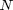

GRAPHDISPLAY - Raster display of a weighted graph.
Contents
Description
Display a (weighted) graph given by its (weighted) edges and its vertices on the natural grid/map domain; the edges of the% graph are discretely represented on the lattice using Bresenham algorithm.
Syntax
M = GRAPHDISPLAY(V, vertex);
[M, f] = GRAPHDISPLAY(V, vertex, wedges, range, disp);
Inputs
V : variable representing either the connected graph itself or its edges; therefore, it is either:
- a sparse and/or logical matrix storing the graph.
- a matrix (N,2) storing the indices of the  edges connecting pair of vertices.
vertex : (optional) matrix (M,2) representing the coordinates of the vertices (nodes) in the map/grid domain; default: wedges=ones(N,1).
wedges : weights of the edges; it must be of same length as edges(:,1).
range : (optional) value used for representing the edges' weights; default: range=255.
disp : (optional) if no output is to be displayed, set to false; default: disp=true.
Outputs
M : output map where non null edges pixels are assigned a value in the range [1,range] proportional to the weight of the edge they belong to; the background (non edge pixels) is assigned 0.
f : figure's index.
See also
Related: GRAPHMAP. Called: BRESENHAMLINE_BASE, IMAGESC.
Function implementation
function [M, varargout] = graphdisplay(V, vertex, wedges, range, disp) if nargin<5, disp = false; if nargin<4, range = 255; if nargin<3, wedges = []; end end end if issparse(V) || isequal(size(V,1),size(V,2)) || ~any(ismember(size(V),2)) % find all the vertices of the graph [i,j] = find(V); edges = unique(sort([i,j],2),'rows'); % edges of the graph, it is a matrix [N,2] storing the indices of the N edges % connecting pair of vertices else edges = V; end if isempty(wedges), wedges = ones(size(edges,1),1); end if size(wedges,2)>1, wedges = wedges(:); end if size(edges,2)~=2, edges = edges'; end if ~isequal(size(edges,1),length(wedges)) error('graphdisplay:errorinput', ... 'edges and wedges must have same number of rows'); end if isscalar(wedges), wedges = range/2; else wedges = range * (wedges-min(wedges)) / (max(wedges)-min(wedges)); end svert = vertex(edges(:,1),:); % starting point evert = vertex(edges(:,2),:); % ending point [y x pts] = ... bresenhamline_base(svert(:,1),svert(:,2),evert(:,1),evert(:,2)); domain = [min(x(:)) max(x(:)) min(y(:)) max(y(:))]; M = zeros(domain(2)-domain(1)+1, domain(4)-domain(3)+1); x = x - domain(1) + 1; y = y - domain(3) + 1; for i=1:size(x,1) M(x(i,pts(i,:))+(y(i,pts(i,:))-1)*size(M,1)) = wedges(i); end if disp f = figure; imagesc(range-M), axis image off, colormap gray; if nargout==2, varargout{1} = f; end else if nargout==2, varargout{1} = []; end end end % end of graphdisplay